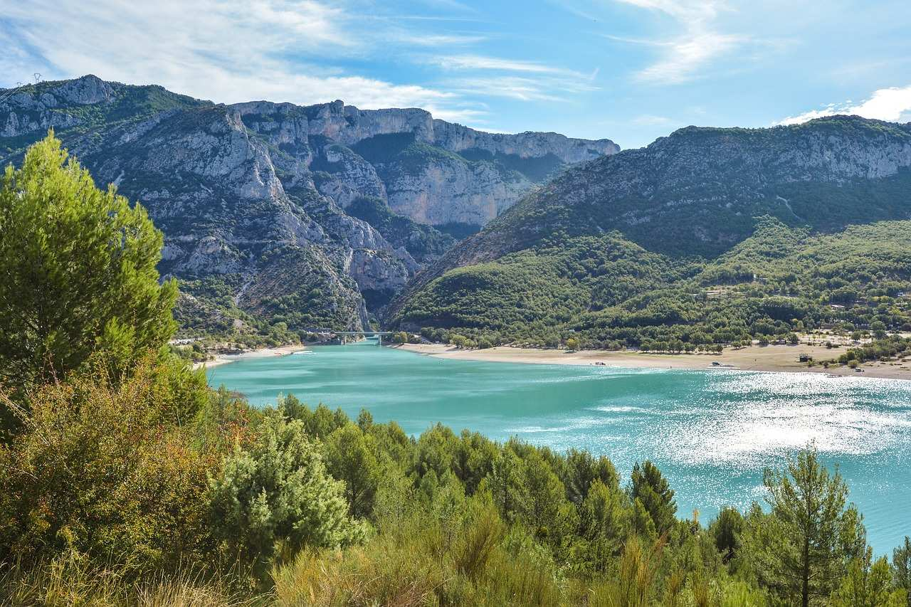
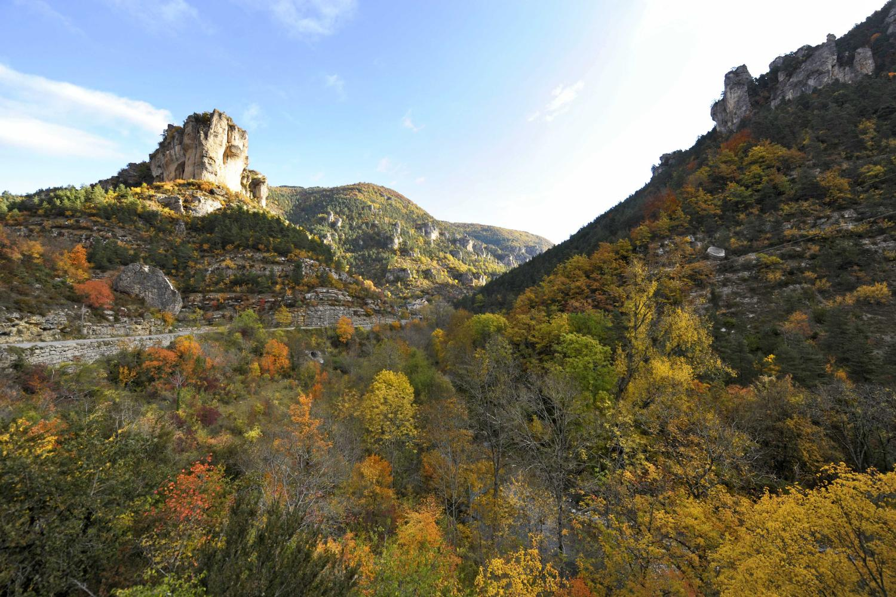

Tour du Mont Blanc
Une randonnée mythique autour du plus haut sommet d'Europe
Découvrir

Gorges du Verdon
Un parcours spectaculaire dans les plus grandes gorges d'Europe
Découvrir

Parc National des Cévennes
Une randonnée au cœur d'une nature préservée
Découvrir